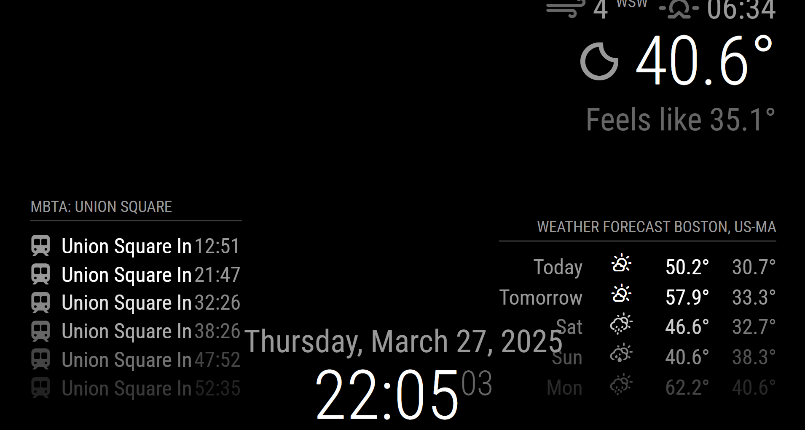

Magic Mirror
I just recently wrapped up a project creating a magic mirror. This one has been on my list of things to do for a long time. Here is the finished result.
Hopefully this write up can help the next person looking to complete this project.

Bill of Materials
- Raspberry Pi 3
- An ACER Monitor I already had. Likely this one
- Wooden frame
- Two way acrylic
- PIR Sensor
- About 12' of cheap wood
- Some screws and fasteners
- Spare cardboard
- Electrical tape
The Software
I used the MagicMirror^2 software to complete the actual display. Installation and setup was fairly straightforward. I followed the instructions for manual install on the official documentation. The display currently has three modules showing:
- Clock
- Weather (using openmeteo as the provider)
- MMM-MBTA (to get departure times for my local subway stop)
I wanted to go with a more minimal approach to the display, with just some basic features that were useful. I thought having the T times was a nice added touch as well. Additionally I made a custom css file to scale the modules and make them more readable from a distance. All modules were scaled up using the following functions. Transform increased the size and transform-origin made sure the module stayed on screen
.<module name>{
transform: scale(2);
transform-origin: <module location>
}
This is the custom CSS file used

The configured display looks like this
There is no overlap on the actual display. This image was just taken from my laptop.
The display is launched by creating and enabling a service that essentially runs the command npm run start from the MagicMirror directory. The image below was early on in the process and I fixed the overlap by moving the widget location to the top right

Personally, I didn't want the display showing 24/7. It seemed like a waste of electricity to always leave it on and I didn't need a night light. To solve this problem I used a passive infrared (PIR) sensor for motion detection. I followed the setup steps in section 2.1 of this post, and essentially used the setup in section 2.2. I modified the PIR script to have a 60 second timeout and removed references to the LED light, which I wasn't using.
To turn the screen on and off I had to use vcgencmd. Other commands didn't work with my monitor/OS distribution.
These didn't initially work, but after some deep diving on forums I found that I needed to comment out a line in /boot/firmware/config.txt to disable a driver.
Specifically, dtoverlay=vc4-kms-v3d. After that the commands worked as intended. I used vcgencmd display_power 1 as my monitor_on.sh script
and vcgencmd display_power 0 as my monitor_off.sh script.
I wish I had something more to add to take advantage of the motion detection, but I couldn't think of anything else to integrate currently.
I edited the rc.local file to launch the python script for the PIR sensor in the background on boot by adding python /home/samps/MagicMirror/pir.py & to the end of the file.
Everything now worked as intended. I had my Pi to automatically launch the display and turn the monitor on/off based on the motion detection. This led to the next task. Constructing the actual mirror.
The Hardware
I went back and forth on what to do to actually make the frame for this project. Many people made the frame from scratch completely. Others drilled through the glass to attach it straight to a monitor for a frameless look. I opted to buy a wood frame and construct a dummy box behind it to hold everything in place.
The monitor I had measured 18 x 10 or so, so I needed a frame large enough to display it. I settled on 18 x 24 since I intended for this to be an entryway mirror. Once I knew my frame size I ordered the acrylic for the mirror as well.
The idea was to construct the frame so the glass and monitor could slide in and out if needed. Additionally the sides weren't fully sealed and the top was left open for ventilation. I cut the wood the display would sit in and drilled out a large hole in the bottom piece for the wires to run through. Each individual wood piece was attached to the frame separately using screws and brackets. This seemed to be the easiest way to do it, and I don’t think there are any structural integrity issues because of it. One piece of wood was run across the back to give the Raspberry Pi somewhere to sit and keep everything from falling out of the back.
Once the acrylic and the display were slipped in, I cut cardboard to fill the rest of the backstop and secured it with electrical tape. Two thicker, folded up pieces were jammed under the wood spanning the back of the frame to apply pressure to the cardboard and keep everything in place. The connections to the display were still exposed in the backside, so all of the wires would be easy to plug in or swap out if needed. The Raspberry Pi and wire slack were also secured with electrical tape, while the PIR sensor was run over the top of the frame. With that the wires were plugged in and the mirror was powered on.
Lessons Learned
Find a monitor and frame, then order the glass last. I thought I was going to order a shadow box for the project, so I ordered the glass for the size I anticipated buying. Then I realized that I could just construct the box to put on a frame, and it would be significantly cheaper. However, I still needed a certain size frame since the glass was already ordered. If I had a do over, I would note the standard sizes of the acrylic panes from the source I was looking to buy from and go to Savers/Goodwill or try Facebook marketplace to thrift the frame instead. Then once I knew my frame size I would order the glass.
On a similar note, I would also try thrifting a cheap monitor or TV. I actually found an old 18” or so TV at Savers. I was able to take the frame off to make the display lighter and more compact, but unfortunately the TV was too old for Consumer Electronic Control (or I just couldn’t get it working), so I couldn't turn it on/off over HDMI. When the TV did not detect a signal it would still stay on for at least 15 minutes Displaying the error message, so that wasn’t going to work. That was the minimum amount of time I could configure through the TV itself, so I decided to use a slightly pricier monitor I had sitting around.
Take more work in progress pictures for things I plan to write about
Lastly, as with all hardware projects, measure twice, cut once. This would have saved me a good amount of time.